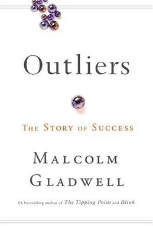

10 000-timmarsregeln (tiotusentimmarsregeln) är ett uttryck myntat av Malcolm Gladwell baserat på forskning av K. Anders Ericsson. Enligt Gladwell innebär 10 000-timmarsregeln att vem som helst kan bli expert på vad som helst med 10 000 timmars övning.
Uttrycket har inspirerat ett flertal verkliga personer, däribland Dan McLaughlin, vars projekt The Dan Plan väckt stor uppmärksamhet. McLaughlin försöker gå från att aldrig ha svingat en klubba till att bli golfexpert med 10 000 timmars övning. Det har dessutom inspirerat filmen 10 000 timmar, där den 30-åriga huvudpersonen säger upp sig från sitt jobb för att försöka bli fotbollsproffs genom 10 000 timmars träning.
Ericsson har i sin forskning funnit belägg för att medfödd talang har en försumbar påverkan på en utövares skicklighet inom alla tänkbara områden och att det enda som spelar roll i sammanhanget är att öva på rätt sätt. Han reserverar dock för att 10 000 är en godtycklig siffra. Nycklarna för att lyckas bli expert är enligt Ericsson målmedveten övning, mentala representationer och handledd övning. Ericsson definierar dessa begrepp i Peak -- Vetenskapen om att bli bättre på nästan allt. Dessa metoder beskrivs också av Geoff Colvin i Talent Is Overrated: What Really Separates World-Class Performers from Everyone Else. Regeln har debatterats i Sverige, där författaren Kajsa Ekis Ekman menar att ”efter tio tusen timmar kommer man att vara så bra att man uppnår det flyt som krävs för att börja skapa något nytt” och att barn födda olika tider på året får olika chanser: ”Bara en sån sak som att dela in hockeylag i ’vår 03’ och ’höst 03’ skulle göra att alla som är födda på hösten ges samma chans.”
Anders Ericsson skiljer målmedveten övning från naiv övning. Naiv övning innebär att man försöker bli bättre på något enbart genom oreflekterad repetition. Målmedveten övning däremot måste ske enligt vissa riktlinjer.
Det första som krävs för att övning ska kunna räknas som målmedveten är att varje övningstillfälle har väldefinierade, specifika mål.[4] Ett väldefinierat mål för övningssessionen är viktigt för att bedöma huruvida man åstadkommit något under sessionen eller inte. Ju bättre definierat målet är, desto lättare är det att nå - ett vagt definierat mål ger ingen tydlig fingervisning om hur man bör uppnå det, medan ett väldefinierat mål hjälper en att hitta vad det är man gör fel, vilket hjälper en att åtgärda felet och nå målet.
Den andra ingrediensen för att målmedveten övning ska lyckas är kvalificerad återkoppling. För att kunna rätta till ett fel måste man själv vara medveten om vad det är för fel man gör, något som är särskilt svårt för nybörjare att få syn på. Kvalificerad återkoppling får man enklast genom handledd övning, alltså privata sessioner med en lärare eller coach som kan peka ut felstegen i realtid. Utövare som lärt sig förbättras genom målmedveten övning kan ofta se sina egna fel och problemområden, de har alltså vant sig att utvärdera sin egen utveckling och ge sig själva feedback.
En annan central komponent i målmedveten övning är fokus. Utan att ägna uppgiften sitt hela engagemang är det svårt att förbättras. Optimalt är om övningen ligger precis på gränsen till för svår, så att man tvingas pusha sig själv utanför sin bekvämlighetszon. För att behålla fokus och engagemang är det viktigt att utövaren själv vill förbättras och har positiva känslomässiga kopplingar till att lyckas.